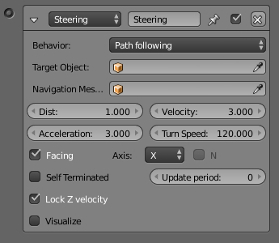

Steering Actuator¶
The Steering Actuator provides simple pathfinding for an object by moving it towards a target object, with options to seek, flee, or follow a path. This actuator will not actually try to avoid obstacles by deviating the objects course.

Steering Actuator.
Properties¶
- Behavior
- Seek, Flee or Path following
- Target Object
- The game object to seek.
- Navigation Mesh Object
The name of the navigation mesh object used by the Steering Actuator when in Path following behavior. The game object will use the Navigation Mesh to create a path to follow the Target Object.
Mẹo
You can create your own mesh to use for navigation and make it a Navigation Mesh in: Or you can let Blender create a Navigation Mesh, then select a mesh. (Floor, or ground, or etc.):
- Distance
- The maximum distance for the game object approach the Target Object.
- Velocity
- The velocity used to seek the Target Object.
- Acceleration
- The maximum acceleration to use when seeking the Target Object.
- Turn Speed
- The maximum turning speed to use when seeking the Target Object.
- Facing
- Set a game object axis that always faces the Target Object.
- Axis
- The game object axis that always faces the Target Object. Options are: Positive (X, Y, Z) and Negative (-X, -Y, -Z).
- Axis N
- Use the Normal of the Navigation Mesh to align the up vector of the game object.
Self Terminated
- Disabled
- Stops moving toward the Target Object once it reaches the maximum distance to approach the Target Object. Will follow the Target Object if it moves further away than the maximum distance.
- Enabled
- Stops moving toward the Target Object once it reaches the maximum distance to approach the Target Object. Will not follow even if the Target Object moves further away than the maximum distance.
- Visualize
- This checkbox let the user specify whether to show or not the debug informations of the actuator. It is also necessary to enable Debug Properties in the Display menu of the Render tab.